Although not a terribly hard puzzle, it got me (as a puzzle designer) thinking about how hard it was to produce such a puzzle without those pesky dark squares. In particular, given a polyomino P, and a non-negative integer n no greater than the area of P, what is the smallest rectangular puzzle containing some non-overlapping copies of P that has a unique path connecting opposite corners that intersects each copy of P in exactly n squares? We do not allow the path to start or end inside a copy of P.
What are the answers for the tetrominoes? Can you prove that many of the cases, especially with large n, are impossible? What about larger polyominoes? Is there a solution for every polyomino and n=1? Can you classify the polyominoes that have solutions where n is equal to the area of the polyomino? Can you classify the polyominoes that fail to have solutions for n=0?
Here are the smallest known solutions for polyominoes of area 5 or less.
| P \ n | 0 | 1 | 2 | 3 |
|---|---|---|---|---|

| 
| |||

| 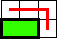 | 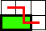 | ||

| 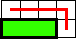 | 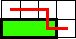 | 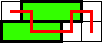 (George Sicherman) | |
| 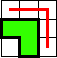 | 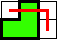 | 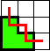 | 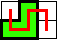 |
| P \ n | 0 | 1 | 2 | 3 | 4 |
|---|---|---|---|---|---|

| 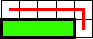 | 
| 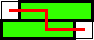 | ? | |
| 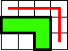 | 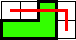 | 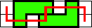 | 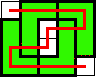 | 
| |

| 
| 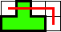 | 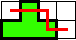 | ? | 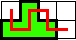 |

| 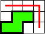 | 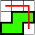 | 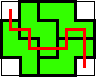 | 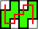 | 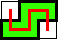 |
| 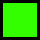 | 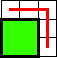 | 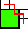 | ? | ? |
|
| 0 | 1 | 2 | 3 | 4 | 5 | |
|---|---|---|---|---|---|---|
| 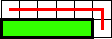 | 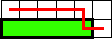 | 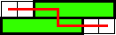 | 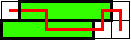 | ? | ||
| 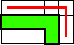 | 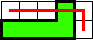 | 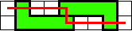 | ? | ? |
| |
| 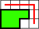 | 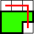 | 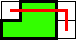 | 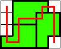 (George Sicherman) | 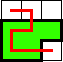 (George Sicherman) | 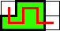 | |
| 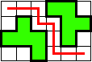 | 
| 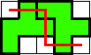 (George Sicherman) | ? | ? |
| |
| 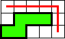 | 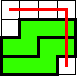 | 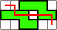 | 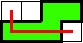 (George Sicherman) | ? | 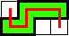 | |
| 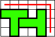 (Sune Kristian Jakobsen) | 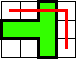 | 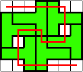 (George Sicherman) | ? | ? |
| |
| ? | ? |
| ||||
 (George Sicherman) | ? |
| ||||

| ? | ? |
| |||
|
| (George Sicherman) | ? | ? | ? |
| |
| ? | ||||||
(Sune Kristian Jakobsen) | (George Sicherman) | ? | ? |
|
Hexominoes:
All of the hexominoes have puzzles for n=0 using either 1 or 2 copies of P. Sune Kristian Jakobsen found the last case. They also all have solutions for n=1 using 1 or 2 copies of P. Most of them have solutions for n=2, but I couldn't find solutions for one of them. Gabriele Carelli found one of these. I found 14 hexominoes that needed more than 2 copies of P. In 2011, George Sicherman found one more. Can you improve any of them?
(George Sicherman) | (George Sicherman) |
(George Sicherman) |
Sune Kristian Jakobsen found there are 9 heptominoes that need more than 2 copies of P, and 2 that have no solutions for n=0. Here are the smallest known solutions. Can you improve any of them?
(Sune Kristian Jakobsen) | (George Sicherman) |
(Sune Kristian Jakobsen) | (Sune Kristian Jakobsen) | (George Sicherman) |
(George Sicherman) | (George Sicherman) |
George Sicherman found that for n=1, all the heptominoes have solutions with no more than 3 tiles. For n=2, he found solutions for most of them, except for these:
Octominoes:
George Sicherman looked at octominoes for n=0, and found 8 that apparently need 6 copies, shown below. Can you improve any of these?
(George Sicherman) | (George Sicherman) |
(George Sicherman) | (George Sicherman) | (George Sicherman) |
(George Sicherman) | (George Sicherman) |
Here is the list of unsolved octominoes for n=0:
Sune Kristian Jakobsen found that this polyomino had no unique paths for any value of n.
| polyomino | n=0 and n=1 solutions | n=1 and n=2 solutions |
|---|---|---|
|
|
| |
|
| ||
|
| ||
| polyomino | n=0 and n=1 solutions | n=1 and n=2 solutions |
|---|---|---|
|
| ? | |
|
| ||
|
| ||
| ? |
| polyomino | n=0 and n=1 solutions | n=1 and n=2 solutions |
|---|---|---|
(George Sicherman) | ||
(George Sicherman) | ||
(George Sicherman) | ||
(George Sicherman) | ||
(George Sicherman) | ? | |
| ? | ||
(George Sicherman) | ? | |
|
| (George Sicherman) | |
|
| ? | |
 (George Sicherman) | (George Sicherman) |
George Sicherman found that every hexomino has a joint n=0 and n=1 solution. He also found solutions for other pairs of n values:
 |
George Sicherman also found these puzzles for n=0, n=1, and n=2:
If you can extend any of these results, please e-mail me. Click here to go back to Math Magic. Last updated 7/31/11.